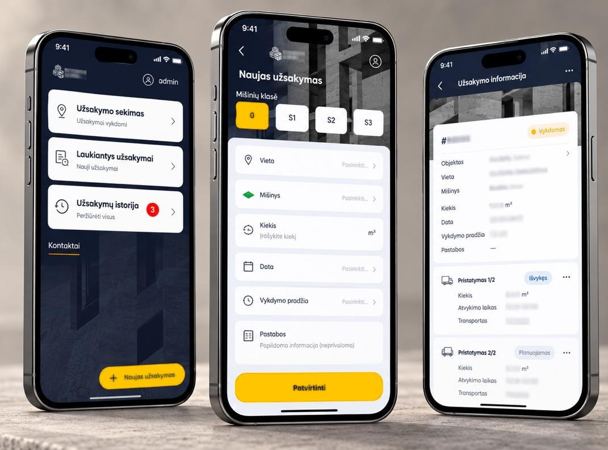

BetonPro sujungia užsakymus, betonvežius, mazgą ir sąskaitas. Jūsų dispečeris planuoja, o klientas pats mato, kada atvažiuos betonas.
Kai užsakymai, betonvežiai ir dokumentai valdomi vienoje sistemoje, kiekvienas kubas pristatomas laiku, o pinigai neužstringa tarp skambučių, Excel lentelių ir popierinių važtaraščių.
Eksportuokite lenteles iš dabartinių programų – Excel, CSV, PDF ar ERP eksportą. BetonPro atpažįsta stulpelius, randa dublikatus ir parodo, ko trūksta. Jūs tik patvirtinate.
Atsiųskite savaitės važtaraščius – per 48 val. parodysime, kur betonvežiai praranda laiką.
BetonPro žinutę paverčia užsakymu.
Užsakymas, sekimas, el. važtaraštis ir kokybės grįžtamasis ryšys – telefone, be papildomos įrangos betonvežyje.

Pasirinkite bazinę versiją arba pilną sistemą. Keliems mazgams pasiūlymą parengsime pagal jūsų poreikį.
Bandymas – 10 užsakymų nemokamai.
BetonPro architektūra sukurta pagal ES duomenų apsaugos ir Lietuvos kibernetinio saugumo reikalavimus.
Tikrus duomenis mato tik jūsų įmonės naudotojai.
Duomenys saugomi ir tvarkomi tik ES, šifruojami ir pseudonimizuojami.
Šifravimas, prieigos kontrolė ir tiekimo grandinės saugumas pagal Lietuvos įstatymą.
BetonPro tik paruošia užsakymą – sprendimą visada priima dispečeris.
Per vieną darbo dieną paruošiame bandomąją aplinką ir įkeliame jūsų betonvežius. Įvedate 10 užsakymų – vairuotojai gauna SMS, klientai – „Kur mano betonas?“ nuorodą.
Per vieną darbo dieną paruošime bandomąją aplinką ir susisieksime telefonu arba el. paštu.
Vienas sprendimas mazgui, dispečeriui ir betonvežiams.
Išmanus betono gamyklų valdymas – nuo užsakymo iki sąskaitos